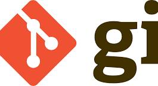

Git es un software de control de versiones diseñado por Linus Torvalds, pensando en la eficiencia, la confiabilidad y compatibilidad del mantenimiento de versiones de aplicaciones informáticas cuando estas tienen un gran número de archivos de código fuente. Su propósito es llevar registro de los cambios en archivos de computadora incluyendo coordinar el trabajo que varias personas realizan sobre archivos compartidos en un repositorio de código. Al principio, Git se pensó como un motor de bajo nivel sobre el cual otros pudieran escribir la interfaz de usuario o front end como Cogito o StGIT.[1] Sin embargo, Git se ha convertido desde entonces en un sistema de control de versiones con funcionalidad plena.[2] Hay algunos proyectos de mucha relevancia que ya usan Git, en particular, el grupo de programación del núcleo Linux. El mantenimiento del software Git está actualmente (2009) supervisado por Junio Hamano, quien recibe contribuciones al código de alrededor de 280 programadores. En cuanto a derechos de autor Git es un software libre distribuible bajo los términos de la versión 2 de la Licencia Pública General de GNU.
Git es un sistema de control de versiones distribuido y de código abierto
conjunto de técnicas para mejorar la visibilidad de un sitio web en los resultados orgánicos y gratuitos de buscadores como Google
Open Graph es un protocolo de marcado web creado por Facebook que permite controlar cómo se muestran los enlaces web en las redes sociales